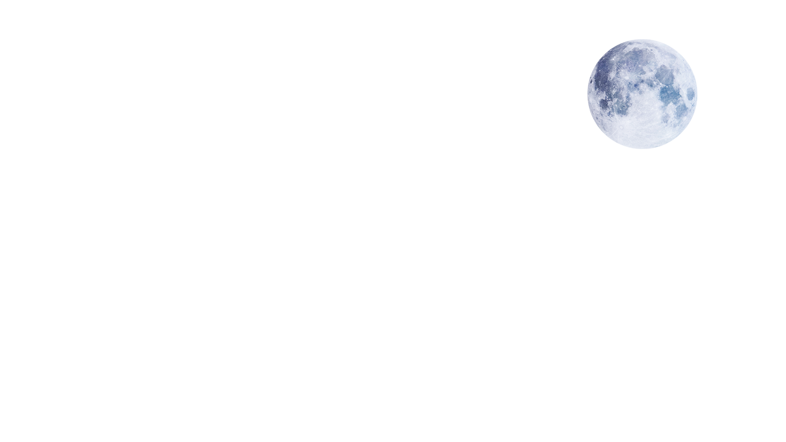
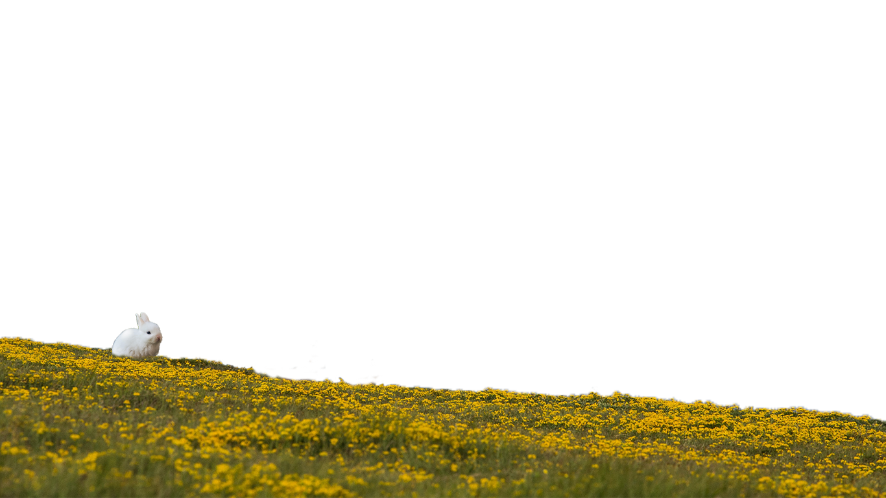
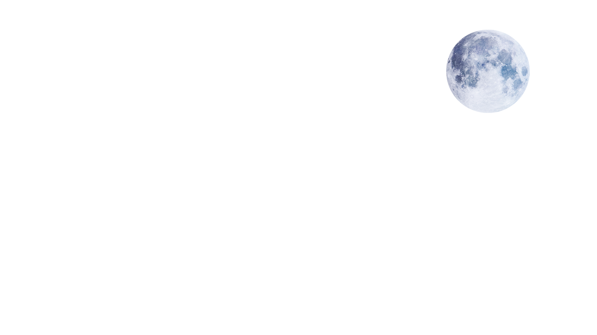
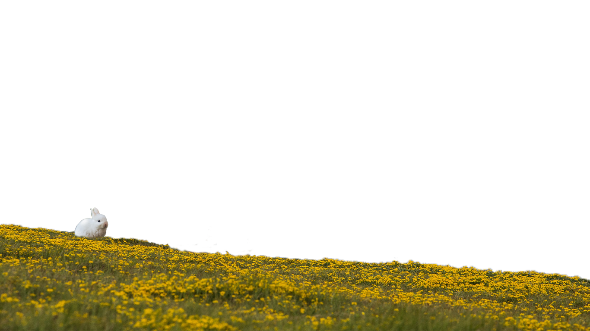

.jpg)
First Rabbit in Space
Marfusha (Little Martha) was the first rabbit astronaut launched into space. Along with her sidekicks, the dogs Otvazhnaya (Brave) and Snezhinka (Snowflake), the trio returned from their Soviet-backed suborbital flight in good health in 1959. The image of Marfusha and her canine companions even inspired a special issue Romanian postage stamp in 1959.¹
Moon Rabbit
Observe the full moon sometime and take note of its shadows. If you look at it in a certain way, you may notice that its shape resembles that of a rabbit standing over a mortar.
This is the Moon Rabbit or Jade Rabbit. A myth that came from China, legend has it that the rabbit we see serves under the moon goddess and pounds the elixir of life for the immortals. The idea of a rabbit on the moon resonated so well that it spread to other countries under Chinese cultural influence like Japan, Korea and Vietnam, though in their version, the rabbit isn't pounding the elixir of life but simple rice cakes instead.
While the Asian version of this legend is the most widespread in modern times, they weren't the only ones who saw the rabbit in ancient times. The Aztecs and other Mesoamerican cultures also saw the Rabbit in the moon (minus mortar) and had their own tales on what it is and how it came to be. One of their most famous legends state that the rabbit we see was thrown there as an insult to the arrogant and cowardly Moon God, so that its luster will not be equal to the noble Sun God's.
A famous mythical figure, the Moon Rabbit appears in several popular media, either in the form of the actual creature or as a winking reference to the legend. They're mostly found in Asian media, but there have been sightings in non-Asian countries as well.²
Sailor Moon
The eponymous Sailor Moon's human name is Usagi Tsukino, a pun on Tsuki no usagi, which means Moon Rabbit in Japanese. Her daughter's name, Chibiusa, means little rabbit.
Sailor Moon, is a fictional superheroine who is the main protagonist and title character of the Sailor Moon manga series written by Naoko Takeuchi. She is introduced in chapter #1, "Usagi – Sailor Moon" (originally published in Japan's Nakayoshi magazine on December 28, 1991), as a carefree schoolgirl who can transform into Sailor Moon, the de facto leader of the Sailor Soldiers. Initially believing herself to be an ordinary girl, she is later revealed to be the reincarnated form of the Princess of the Moon Kingdom, and she subsequently discovers her original name, Princess Serenity.³
Makanai
The Japanese cosmetics company, Makanai, has a logo that is a moon rabbit pounding gold, representing abundance of harvest, beauty, and longevity. Makanai was established in 1999 as a tribute to the century-old tradition of goldbeaters manually making gold leaves at its predecessor company, Yoshitaka Gold Leaf Foundry. The gold foundry was established in 1899 in Kanazawa.⁴
Waso Learn
Waso Learn, Myanmar educational mobile application that develops for the purpose of teaching and learning starting from primary to high school level, has a logo of the moon and a rabbit wearing Myanmar school uniform. It became well-known during COVID-19 pandemic in Myanmar. It seems like the name, 'Waso' is taken from full moon of Waso which means Dhammacakka.⁴